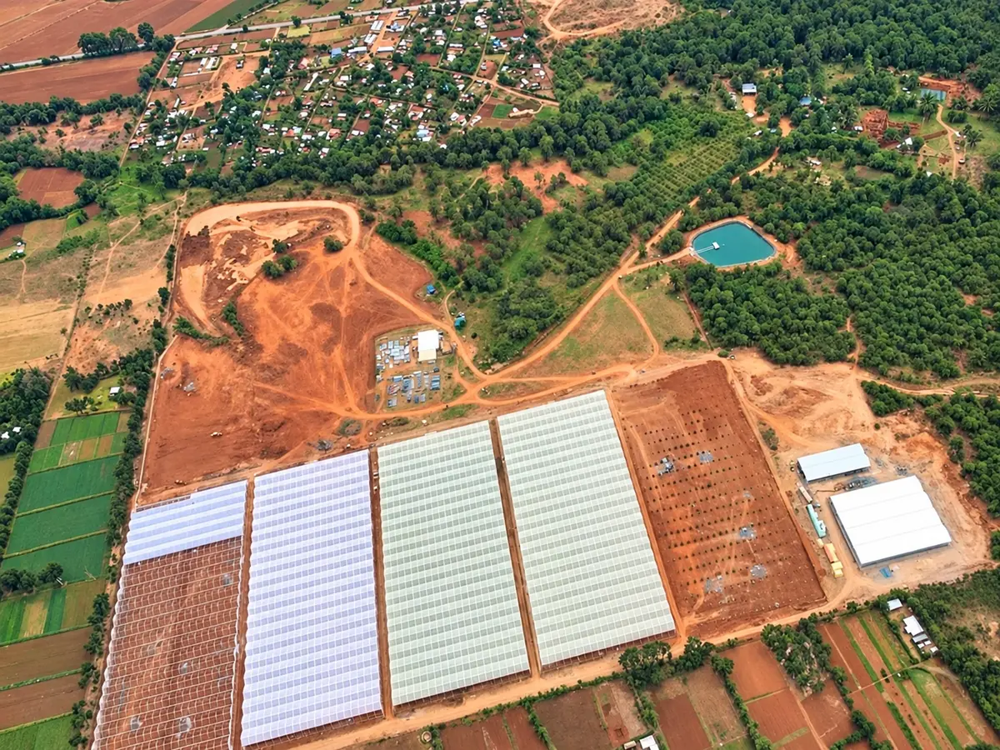
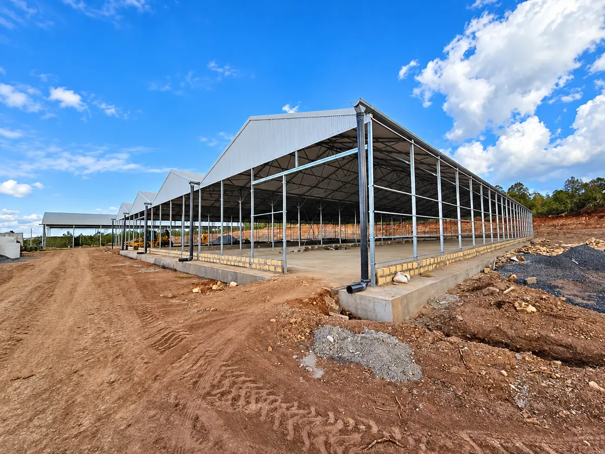

The Farm
Grown in Timau
Timau · Kenya
The Place
Timau lies on the slopes of Mount Kenya, in Kenya’s Meru region.
Altura describes a high-altitude site with cool nights and strong light, bordered on its eastern side by the Timau River.

Under development
One integrated system
Altura is building greenhouses, irrigation and fertigation, climate monitoring, and technical, postharvest and cold-chain facilities, planned to work together from production to dispatch.
Phase one is planned at 10 hectares.
